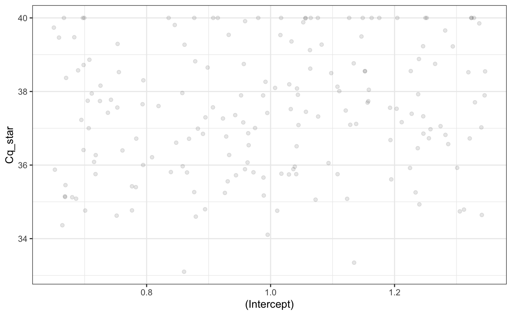
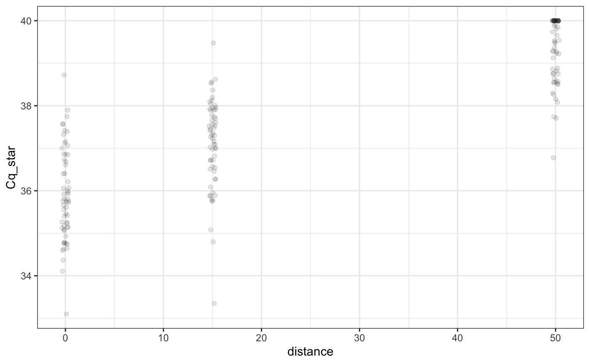
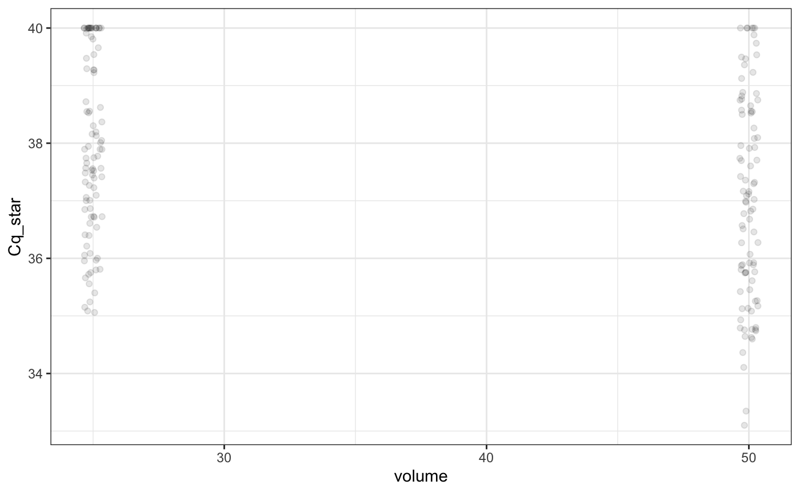
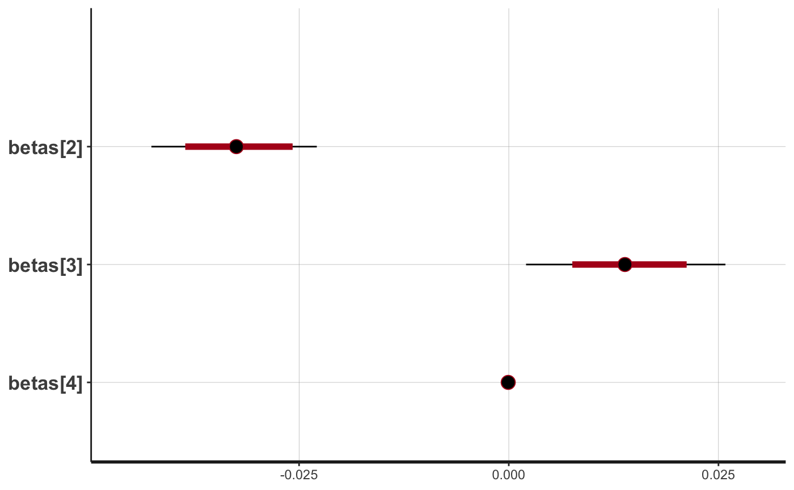
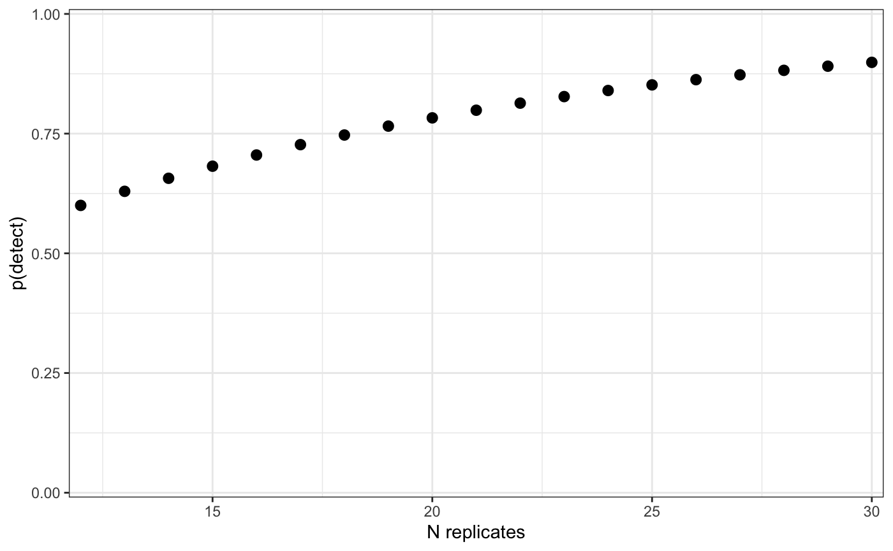

artemis-overview.RmdThe artemis package was created to aid in the design and analysis of environmental DNA (eDNA) survey studies by offering a custom suite of models for eDNA sampling and qPCR data. Typically, data collected from these studies are modeled using a simple binary response of detection/no detection. While this approach has been OK, there are several characteristics of eDNA data which made us feel that it would benefit from a different modeling approach:
In eDNA samples, the concentration of eDNA is not directly measured. Instead, the amount of eDNA present is represented as a function of the number of quantification cycles of qPCR (hereafter referred to as the “Cq” value) completed before amplification takes place. eDNA concentration (\([eDNA]\)) is then related to Cq via a standard curve generated in the lab for the target species. This standard curve formula typically takes the form: \[Cq = log[eDNA] * \beta + \alpha\] The standard curve is specific to the lab reagents and techniques used. The implication of this is that models using Cq values (or a derived value such as “postitive detection”) as the response result in estimates of effect sizes which cannot be directly compared between different studies using different standard curves.
A higher Cq value corresponds to a lower concentration of eDNA in a sample. Above a pre-determined threshold, additional quantification cycles are not attempted. Therefore, “non-detection” is taken to be any sample which requires more than the threshold number of cycles to detect. Not taking this data truncation process into account in the model can result in increased uncertainty and bias in our estimates of the effect sizes.
The potential sources of measurement error in the extraction and qPCR processes are difficult to separate and quantify. For example, Cq values produced by qPCR become more variable at the threshold of detection, i.e. as the number of eDNA molecules available for amplification approaches zero. This source of variability in the response is different from that produced by error introduced in the pipetting process during extraction, but they have the same effect on Cq (namely, increasing variability).
The artemis package addresses these issues by directly modeling the effect of the predictors on the latent (unobserved) variable, eDNA concentration. It does this by linking eDNA concentration to the observed response via the standard curve parameters. The general model is as follows:
\[ Cq_i \sim Normal(\hat{Cq_i}, \sigma_{Cq}) \\ \hat{Cq_i} = \alpha_{std\_curve} + \beta_{std\_curve}* log[eDNA]_i \\ log[eDNA]_{i} = X_{i} \beta\]
where \(\beta\) is a vector of effects on \(log[eDNA]\), \(X\) is the model matrix of predictors and \(\alpha_{std\_curve}\) and \(\beta_{std\_curve}\) are fixed values provided by the standard curve.
As detection limits vary with genetic assay, the upper threshold on Cq in the model is adjustable. Any values of \(\hat{Cq_i}\) which are greater than the upper limit on \(Cq_i\) are recorded as the threshold value. For example, a \(\hat{Cq_i}\) value of 42 is recorded as 40 when the upper limit is 40 cycles.
This model formulation makes several assumptions:
\(log[eDNA]\) is assumed to be uniform within a sample.
\(log[eDNA]\) is sampled without error.
All measurement error is introduced in the extraction/qPCR stage. Field sampling is assumed to take place without error.*
There are no false detections, i.e. the measurement error cannot result in a positive detection when eDNA is not present in the sample.
*Future versions of the artemis package might allow for measurement error in both the field collection and qPCR stages.
Importantly, this formulation produces estimates of the effect sizes which:
are modeled directly on \(log[eDNA]\) rather than Cq, therefore are independent of the standard curve and can be compared between studies.
account for the data truncation at the upper limit of qPCR cycles, which reduces uncertainty and bias in the estimates.
directly model the measurement error on qPCR extraction, allowing quantification of the amount of uncertainty attributable to uncertainty in the effect sizes vs. lab procedure.
In artemis, the model is specified using a model formula, similar to the lm() or lmer() functions. This model formula is used to construct the model on \(log[eDNA]\).
The functions in artemis generalize to any eDNA survey data containing Cq values associated with a standard curve for the target species.
Since artemis was originally written to analyze aquatic eDNA samples, the examples and sample data included in the package (see ?eDNA_data) reference variables that are specific to aquatic eDNA survey data. These variables include volume (the the number of mililiters of water that went through the filter in each sample) and distance (the distance in meters from the source of eDNA). For example, eDNA_data is from a “live car” experiment, where eDNA was sampled at known distances from a source of eDNA (fish in a net pen in unidirectional flow).
In the following examples, tech_rep refers to technical replicates extracted from a single eDNA sample; rep refers to a single eDNA sample.
The functions included in artemis can be grouped into a few categories:
In addition to these functions, artemis includes methods for R’s plot(), summary(), data.frame(), and predict() functions.
One of the most basic tasks for the artemis package is simulating data. This data is simulated using the same data generation process as the model outlined above. Simulated data is useful for testing assumptions, designing a study, or doing a post-hoc analysis.
To simulate data, we first must provide a set of levels for each variable in your survey data. For example, if the hypothetical experiment had varying levels of the variables distance, volume, tech_rep, and rep, we would create a list with the variable names and the associated levels:
vars = list(Intercept = 1,
distance = c(0, 15, 50),
volume = c(25, 50),
tech_rep = 1:10,
rep = 1:3,
Cq = 1)Notice that we provided a level for the intercept, as well as a dummy variable for the response. The response dummy variable (Cq = 1 above) is only used internally to create the model matrix. By default, the simulation functions construct a model matrix assuming a complete block design (i.e. every level of each variable is represented).
Next, we must provide a set of effect sizes for each of the variables we have in the variable levels. For example, if we were only simulating data using distance and volume, we might specify the effect sizes as:
Again, it is important to remember that these are the effect sizes on \(log[eDNA]\), not on the Cq values themselves. All the parameters of the model are on the scale of \(log[eDNA]\), including the intercept. Hence, we specified the intercept to be -10, which corresponds to exp(-10)\([eDNA]\). (In practice, if the default value for log[eDNA] is close to 0, some a negative number less than -10 is a fair assumption for the intercept beta.)
Finally, to simulate data from a fixed-effects model, we use the sim_eDNA_lm() function:
set.seed(1234)
ans = sim_eDNA_lm(Cq ~ distance + volume,
variable_list = vars,
betas = betas,
sigma_Cq = 1,
std_curve_alpha = 21.2,
std_curve_beta = -1.5)Notice that we must provide the parameters from a standard curve equation for the conversion formula between \(log[eDNA]\) and Cq values to the simulation function, as well as the measurement error on Cq (sigma_Cq).
You might have noticed that when we specified the vars above, we included many variables that we did not include in the formula. By design, all of the functions ignore extra variables in input variable_list or data (in the case of the modeling functions). This allows us to create a comprehensive list of variables we might be interested in, and then only adjust the model formula to change the simulations.
By default, the sim_eDNA_* functions will only simulate one instance of the hypothetical survey/experiment, but we can easily simulate many data sets in one go by adjusting the n_sim parameter, e.g.
ans2 = sim_eDNA_lm(Cq ~ distance + volume,
vars,
betas = c(intercept = -10.6, distance = -0.05, volume = 0.1),
sigma_Cq = 1,
std_curve_alpha = 21.2,
std_curve_beta = -1.5,
n_sim = 500)If we want to simulate data for an incomplete block design, we can specify our own variable data.frame, X, in which case the variable levels are ignored and the provided data frame is used to create a model matrix.
The returned object from the sim_eDNA_* functions is a list containing the latent variable ln_conc, the equivalent Cq value before truncation and measurement error Cq_hat, and the Cq value following the truncation and measurement error Cq_star. If n_sim = 1, you can convert the simulations to a dataframe by calling as.data.frame or data.frame. This can be useful when you wish to create custom plots of simulated data.
simsdf <- data.frame(ans)
head(simsdf)
#> ln_conc Cq_star X.Intercept. distance volume
#> 1 -10.10 35.72224 1 0 25
#> 2 -10.85 38.13096 1 15 25
#> 3 -12.60 39.22541 1 50 25
#> 4 -9.60 35.74491 1 0 50
#> 5 -10.35 34.79865 1 15 50
#> 6 -12.10 39.46543 1 50 50When multiple simulations are requested, each of these will be stored in a matrix, with each column representing a single simulated instance.
To simulate for a mixed-effects model, we use the function sim_eDNA_lmer(). Random effects are specified using the syntax of the lme4 package, e.g. (1|random effect):
ans3 = sim_eDNA_lmer(Cq ~ distance + volume + (1|rep) + (1|tech_rep),
variable_list = vars,
betas = c(intercept = -10.6, distance = -0.05, volume = 0.01),
sigma_Cq = 1,
sigma_rand = c(0.1, 0.1), #stdev of the random effects
std_curve_alpha = 21.2,
std_curve_beta = -1.5)When we are simulating data with random effects, we must provide the standard deviation of the random effects (one for each effect) in addition to the information for the fixed effects. Random effects are assumed to be generated from a normal distribution for these simulations using this standard deviation (sigma_rand). When n_sims > 1, different random effects are generated for each simulation.
The results of a simulation can be inspected via the summary and plot methods. These can be helpful when assessing how realistic the simulated data are, and to test the assumptions behind the model and the betas used. For example, the results simulated for the fixed-effects model above can be summarized by calling:
summary(ans)
#> variable level 2.5% 50% 97.5% mean p_detect
#> 1 (Intercept) 1 34.61116 37.43483 40.00000 37.44409 0.8777778
#> 2 distance 0 34.22869 35.75370 37.82544 35.89816 1.0000000
#> 3 distance 15 34.93366 37.28147 38.59021 37.11066 1.0000000
#> 4 distance 50 37.72237 39.53702 40.00000 39.32344 0.6333333
#> 5 volume 25 35.17090 37.74466 40.00000 37.87296 0.8222222
#> 6 volume 50 34.16418 37.00682 40.00000 37.01521 0.9333333The default behavior of summary() is to give the empirical marginal distributions of the simulated data, i.e. the response summarized by each level of the variables used to simulate the data. WARNING: these marginal effects can be misleading in cases where interactions are used in the formula. The summary also includes an empirical summary of the percent of each level which was detected, i.e. had a Cq value below the threshold.
So in the output above, 95% of the simulated data with distance = 0 was between 28.2 and 34.8. The p_detect column is the percentage of each effect that was below the detection threshold. In this simulation, the intercept is pretty low and the effects of distance and volume are small. Most levels resulted in samples below the detection threshold.
The results of the simulations can be plotted with plot(),

Similar to summary(), this plots (in the same order as they appear in the formula) the marginal response (either Cq or \(log[eDNA]\)) by each level of the variables used to simulate the data.
Simulations are helpful for designing new studies. Given a set of assumptions about the effect sizes, we can simulate a full study and evaluate how well we are able to detect eDNA, and/or or whether the proposed design allows us to estimate those effects with precision.
For example, suppose we wanted to design a study exploring the effects of different distances on the detection of eDNA. From previous studies, we have estimated the effect of distance to be a -0.04 decrease in log[eDNA] per meter distance away from source. If we want to have a sense of how many replicates we need for this study to have at least 80% power (>=80% chance of estimating a beta for distance without including 0 in its CI), we can do this using the est_power_lm() and specifying a design. To do this, we specify the number of replicate filters as a vector (rep) in the variable_list, along with the rest of our variables and argument values. Note that these functions are not yet parallelized and may take some time to run on your machine
dist_power = est_power_lm(Cq ~ 1 + distance,
variable_list = list(Cq = 1,
distance = c(0,100,300),
rep = 1:3),
betas = c(intercept = -10.6, distance = -0.04),
sigma_Cq = 1,
std_curve_alpha = 21.2, std_curve_beta = -1.5,
type = "exclude_zero")
dist_powerIt appears that 3 samples was not enough to estimate the effect of distance in this case. We could keep trying different number of replicates until we get the number we would like. However, it is easier to use the function est_power_range_lm(), which will automate this process for us. The call is similar to the one above, but instead of specifying the number of replicates in the variable_list, we provide a rep_range, which is seq(2,20,2) (every 2 from 2 to 20) by default. It will stop running once the specified power level is reached. Warning, this is quite CPU intensive, so for this demonstation, we will be lowering the rep_range and the number of iterations for each case:
set.seed(1234)
dist_power_range = est_power_range_lm(Cq ~ 1 + distance,
variable_list = list(Cq = 1,
distance = c(0,100,300)),
betas = c(intercept = -10.6, distance = -0.04),
sigma_Cq = 1,
std_curve_alpha = 21.2, std_curve_beta = -1.5,
type = "exclude_zero",
rep_range = c(5,10))
dist_power_range
#> $`n_rep: 5`
#> (Intercept) distance
#> 1 0
#>
#> $`n_rep: 10`
#> (Intercept) distance
#> 1 1 For this study, it looks like we will need greater then 5 replicates (but perhaps less than 10) to have our desired 80% power.
The second purpose of the artemis package is to fit a model to collected data. Similar to the simulation functions, the artemis package has two functions which fit a Bayesian latent variable model to eDNA data; eDNA_lm() for fixed effects models and eDNA_lmer() for mixed effects models.
The syntax of these functions is similar to the simulation functions. We provide a model formula, a data frame with the observed data, and then the parameters for standard curve formula to convert between log[eDNA] and Cq values. For example, to fit a model to the sample data included in artemis, eDNA_data:
The modeling functions use Stan to fit the Bayesian model. Full control of the MCMC algorithm can be accomplished by passing arguments to rstan::stan() in the modeling functions. For example,
model_fit = eDNA_lm(Cq ~ Distance, eDNA_data,
std_curve_alpha = 21.2, std_curve_beta = -1.5,
iter = 1000)By default, artemis suppresses the (often verbose) output from Stan, but users can (and should) enable it with verbose = TRUE when the model is slow or the output suggests the MCMC algorithm might not have converged, for example,
model_fit = eDNA_lm(Cq ~ Distance + Volume + Distance*Volume,
data = eDNA_data,
std_curve_alpha = 21.2, std_curve_beta = -1.5,
iter = 300, n_chain = 2,
verbose = TRUE)
#>
#> SAMPLING FOR MODEL 'eDNA_lm' NOW (CHAIN 1).
#> Chain 1: Rejecting initial value:
#> Chain 1: Log probability evaluates to log(0), i.e. negative infinity.
#> Chain 1: Stan can't start sampling from this initial value.
#> Chain 1: Rejecting initial value:
#> Chain 1: Log probability evaluates to log(0), i.e. negative infinity.
#> Chain 1: Stan can't start sampling from this initial value.
#> Chain 1:
#> Chain 1: Gradient evaluation took 0.000192 seconds
#> Chain 1: 1000 transitions using 10 leapfrog steps per transition would take 1.92 seconds.
#> Chain 1: Adjust your expectations accordingly!
#> Chain 1:
#> Chain 1:
#> Chain 1: Iteration: 1 / 300 [ 0%] (Warmup)
#> Chain 1: Iteration: 100 / 300 [ 33%] (Warmup)
#> Chain 1: Iteration: 151 / 300 [ 50%] (Sampling)
#> Chain 1: Iteration: 250 / 300 [ 83%] (Sampling)
#> Chain 1: Iteration: 300 / 300 [100%] (Sampling)
#> Chain 1:
#> Chain 1: Elapsed Time: 0.296992 seconds (Warm-up)
#> Chain 1: 0.212156 seconds (Sampling)
#> Chain 1: 0.509148 seconds (Total)
#> Chain 1:
#>
#> SAMPLING FOR MODEL 'eDNA_lm' NOW (CHAIN 2).
#> Chain 2: Rejecting initial value:
#> Chain 2: Log probability evaluates to log(0), i.e. negative infinity.
#> Chain 2: Stan can't start sampling from this initial value.
#> Chain 2:
#> Chain 2: Gradient evaluation took 0.000115 seconds
#> Chain 2: 1000 transitions using 10 leapfrog steps per transition would take 1.15 seconds.
#> Chain 2: Adjust your expectations accordingly!
#> Chain 2:
#> Chain 2:
#> Chain 2: Iteration: 1 / 300 [ 0%] (Warmup)
#> Chain 2: Iteration: 100 / 300 [ 33%] (Warmup)
#> Chain 2: Iteration: 151 / 300 [ 50%] (Sampling)
#> Chain 2: Iteration: 250 / 300 [ 83%] (Sampling)
#> Chain 2: Iteration: 300 / 300 [100%] (Sampling)
#> Chain 2:
#> Chain 2: Elapsed Time: 0.339952 seconds (Warm-up)
#> Chain 2: 0.255316 seconds (Sampling)
#> Chain 2: 0.595268 seconds (Total)
#> Chain 2:To fit a model with a random effect, use the eDNA_lmer() function and specify the random effects using the syntax used by lme4:
model_fit2 = eDNA_lmer(Cq ~ Distance + Volume + (1|SampleID),
eDNA_data,
std_curve_alpha = 21.2, std_curve_beta = -1.5)As with the simulations, the model results can be summarized with summary() and can be plotted with plot(),
summary(model_fit)
#> mean 2.5% 50% 97.5%
#> (Intercept) -1.108083e+01 -1.169717e+01 -1.106895e+01 -1.047305e+01
#> Distance -3.240842e-02 -4.258832e-02 -3.234939e-02 -2.288818e-02
#> Volume 1.397507e-02 2.109735e-03 1.380098e-02 2.580679e-02
#> Distance:Volume -6.957109e-05 -2.146604e-04 -6.642794e-05 6.099628e-05
#> CQ sd 3.810139e+00 3.529423e+00 3.801063e+00 4.140466e+00
plot(model_fit, pars = c(sprintf("betas[%d]", 2:4)))
#> ci_level: 0.8 (80% intervals)
#> outer_level: 0.95 (95% intervals)
Often purpose of a eDNA sampling study is to inform a field sampling protocol. For these cases, we often want to know how likely we are to detect eDNA, given the way that we sampled. est_p_detect() returns the probability of getting a detection across all planned samples and replicates, where n_rep represents the product of the number of filters and technical replicates for each filter. For example, if you planned to take 2-5 filters at each variable level and then complete 6 extractions for each filter, that would be n_rep = 12:30.
p_detect = est_p_detect(variable_levels = c(Intercept = 1,
Distance = 100),
betas = c(Intercept = -10.5, Distance = -0.03),
Cq_sd = 1,
std_curve_alpha = 21.2, std_curve_beta = -1.5,
n_rep = 12:30)
p_detect
#> Variable levels:
#> Intercept Distance
#> 1 100
#>
#> n_reps p_detect
#> 1 12 0.6000732
#> 2 13 0.6294795
#> 3 14 0.6567236
#> 4 15 0.6819645
#> 5 16 0.7053494
#> 6 17 0.7270148
#> 7 18 0.7470872
#> 8 19 0.7656837
#> 9 20 0.7829128
#> 10 21 0.7988751
#> 11 22 0.8136637
#> 12 23 0.8273648
#> 13 24 0.8400586
#> 14 25 0.8518189
#> 15 26 0.8627146
#> 16 27 0.8728091
#> 17 28 0.8821613
#> 18 29 0.8908259
#> 19 30 0.8988534We can also plot this,

Alternatively, we can also use a fit model to estimate the p(detect) for a set of circumstances. Unlike the above, using a fit model allows us to estimate the probability of detection with the uncertainty in our effect size estimates taken into account.
p_detect2 = est_p_detect(variable_levels = c(Intercept = 1,
Distance = 100,
Volume = 50,
DistanceXVolume = 100*50
),
model_fit = model_fit,
n_rep = 1:12)
print(p_detect2)and we can plot the results,
Notice how we get uncertainty intervals when we use a fit model.
Once a model is fit, it can be helpful to predict the outcome, either for the data used to fit the model or new data. For this, artemis provides methods for predict() for models fit with eDNA_lm*(). This prediction process is very closely related to simulating data with fixed effect sizes.